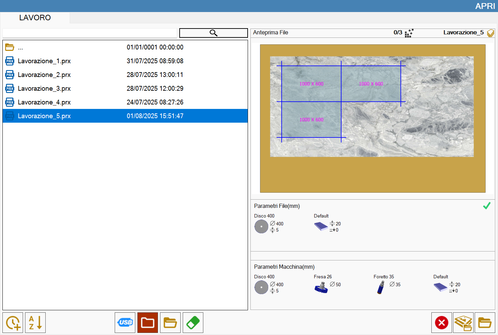
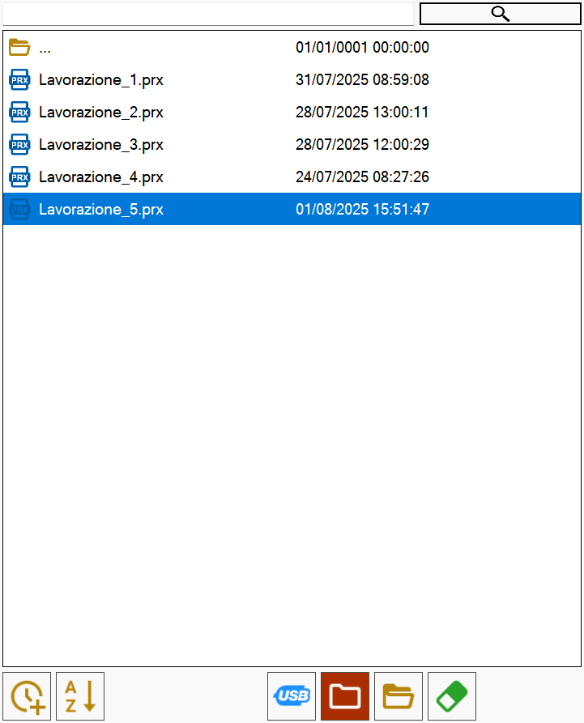
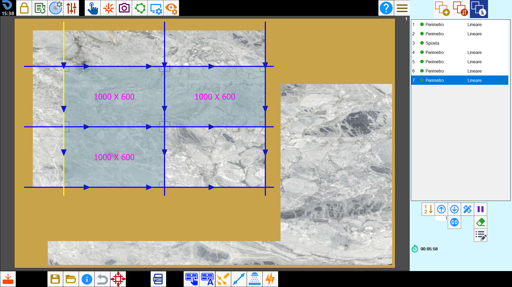

This function allows to load the state of a working that was saved.

Pieces list
In the left section is located the list of files state that is possible to load.

Buttons
 | Sort by date |
 | Sort by name |
USB memory | |
Working folder | |
 | Explore folders |
Delete file | |
 | Search file |
Preview
In this section is shown a preview of the selected file among those of the list.

Under the preview are shown the parameters of the slab and the tools of the selected file and of the machine, respectively placed in the upper and lower section.

WARNING!To open completely a working the parameters of the files must be identical to the machine parameters. In the contrary, the file parameters different from the machine parameters are highlighted in red.If the parameters are not the same, the work opens partially, only pieces placement. A message warns the user that changes to the cuts cannot be performed.

Other buttons
Slab Matching | |
Load state |
How to load a state
From the main page, access the panel for uploading a status.
So, select the file relating to the working that you want to reproduce.
After the confirmation, the pieces will be created and inserted inside the work area with all the operations that have been applied to them.

In the same way, it is possible to load a previously programmed working with all the operations carried out.

This functionality is used to load in the machine a project programmed in the office.

Import DXF (Optional)
This function allows to load the state of a working saved on a dxf file.